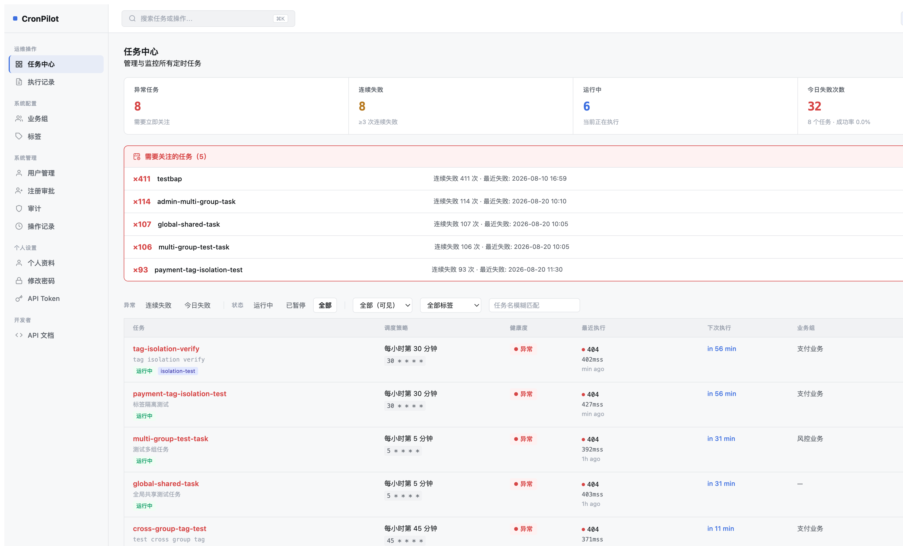
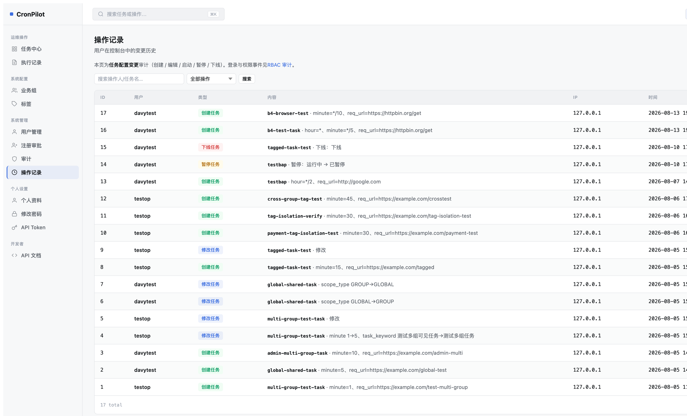
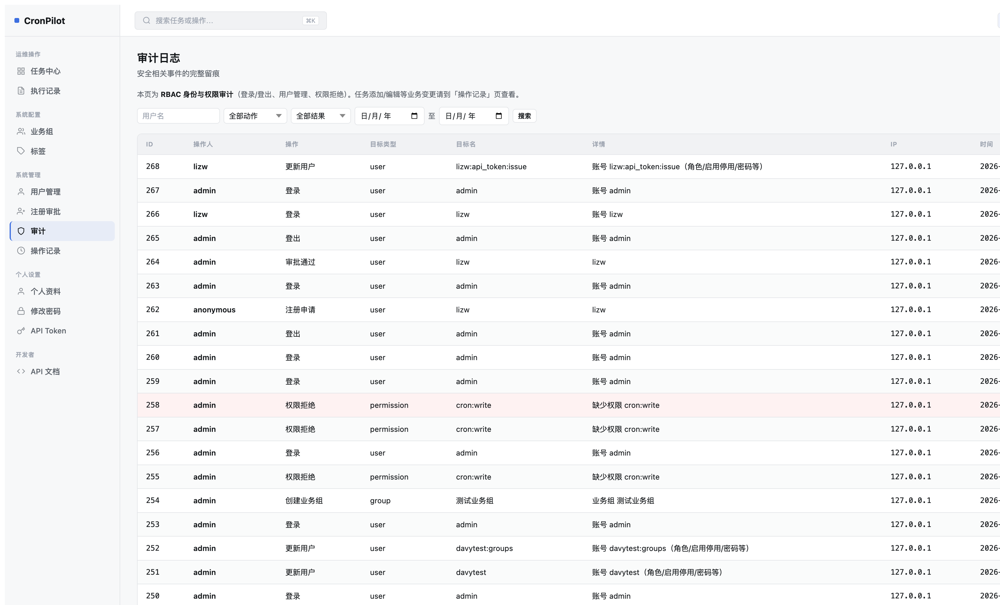
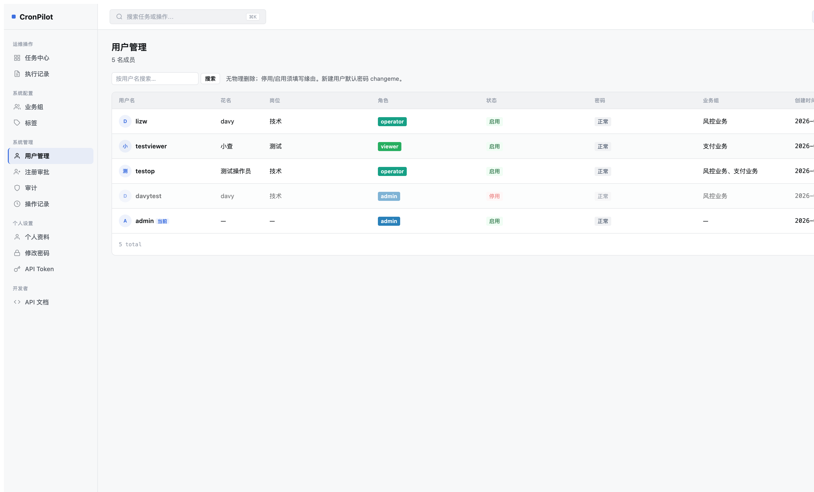
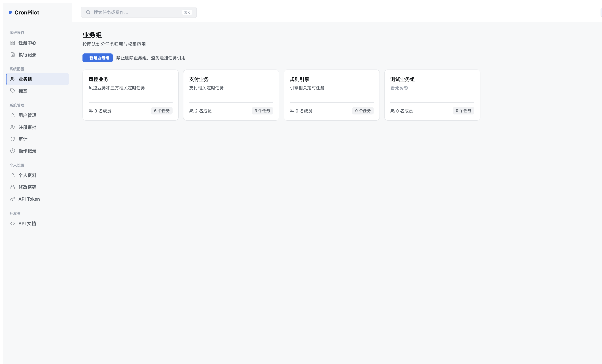
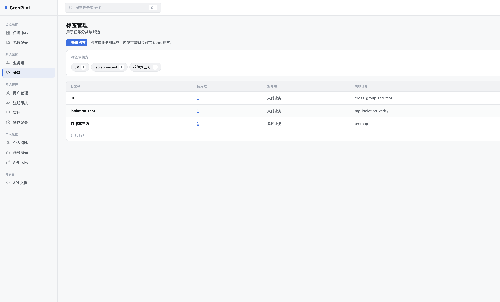

1
任务中心（Dashboard）
✓ 高度符合
Mockup 设计
任务中心
管理与监控所有定时任务
任务总数
128
运行中
6
今日失败
2
24h 成功率
99.4%
| 任务 | 调度策略 | 运行状态 | 操作 |
|---|---|---|---|
同步订单履约状态 order-fulfillment-sync 交易 P0 |
*/5 * * * * | 运行中 | |
生成日活报表 dau-report-daily 数据 |
0 2 * * * | 上次成功 |
当前实现

-
符合
4 格统计卡 结构吻合 Mockup，当前展示「异常任务/连续失败/运行中/今日失败次数」四个运营指标，替代 Mockup 的「总数/运行中/今日失败/成功率」——属于有意识的方案调整（异常优先设计），可接受。
-
符合
Exception Panel（异常任务面板） 完整实现，高度匹配 Mockup 红框样式。
-
符合
任务表格 7 列 任务 / 调度策略 / 健康度 / 最近执行 / 下次执行 / 业务组 / 操作，比 Mockup 多出 3 个信息列，功能更丰富。图标操作按钮 ✓。
-
符合
「新建任务」按钮 已实现，权限门禁（cron:write）下显示。
✓ 无需修改
- 任务中心整体与 Mockup 高度吻合，当前实现在信息密度与交互上超过 Mockup 原型。
2
执行记录（Execution Logs）
✓ 高度符合
Mockup 设计
执行记录
全部任务的调度执行历史
全部
失败
超时
| 任务 | 触发时间 | 耗时 | 响应码 | 状态 |
|---|---|---|---|---|
同步订单履约状态 | 2026-08-11 15:00 | 184ms | 200 | 成功 |
清理过期缓存 | 2026-08-11 15:00 | 超时 | — | 超时 |
当前实现

-
符合
Filter 状态筛选 Mockup 的「全部/失败/超时」，当前实现为「非成功/全部/仅失败/仅异常/仅成功」——比 Mockup 更完整。
-
符合
列结构 当前实现含：LOG ID / 任务名 / 返回内容 / 执行时间 / 耗时 / 结果，与 Mockup 的 5 列相近且更丰富。
-
符合
时间范围筛选 当前额外提供开始/结束时间输入，超出 Mockup 设计，属合理增强。
✓ 无需修改
3
操作记录（Operation Log）
⚠ 中等偏差
Mockup 设计（5 列，对象独立列，操作用 Badge）
操作记录
用户在控制台中的变更历史
| 操作人 | 操作 | 对象 | 时间 | 来源 IP |
|---|---|---|---|---|
| 张伟 | 修改 | order-fulfillment-sync | 2026-08-11 14:20 | 10.2.31.4 |
| 李娜 | 下线 | legacy-promo-settle | 2026-08-11 11:03 | 10.2.31.9 |
| 张伟 | 新建 | inventory-alert-scan | 2026-08-10 19:44 | 10.2.31.4 |
当前实现（6 列，含 ID，内容列冗长）

当前（6 列）
用户
类型（Badge ✓）
IP
时间
Mockup（5 列，建议收敛至）
操作人
操作（Badge）
对象（仅 task_name，mono 字体）
时间
来源 IP
-
中
ID 列冗余 自增主键 ID 对用户无操作意义，占据宝贵列宽，应移除。
-
中
「内容」列过于冗长 当前显示原始 detail_json 摘要（含 req_url、minute、scope_type 等技术参数），如
b4-browser-test · minute=*/10, req_url=https://httpbin.org/get。Mockup 的「对象」列仅展示任务名（monospace），简洁且可扫视。建议：「内容」列拆为「对象」（仅 task_name）+ 可展开详情 tooltip。 -
符合
操作类型 Badge 已实现颜色 Badge（创建任务 / 修改任务 / 启停 / 下线），与 Mockup 一致。
建议修复（Z1）
- 移除 ID 列，减少视觉噪音。
- 「内容」列重命名为「对象」，只展示 task_name（monospace），技术参数收进行级 tooltip（title 属性已有，保留）。
- 列顺序调整为：操作人 → 操作 → 对象 → 时间 → IP，与 Mockup 对齐。
4
审计日志（Audit Logs）
⚠ 中等偏差
Mockup 设计（5 列简洁）
审计日志
安全相关事件的完整留痕
全部
登录失败
权限变更
| 事件 | 用户 | 时间 | IP | 结果 |
|---|---|---|---|---|
| 登录 | 张伟 | 2026-08-11 09:02 | 10.2.31.4 | 成功 |
| 登录 | unknown | 2026-08-11 03:11 | 203.0.113.9 | 失败 × 5 |
| 角色变更 | 张伟 → 李娜 | 2026-08-10 16:40 | 10.2.31.4 | 成功 |
当前实现（8 列，含冗余 ID/目标类型/详情）

当前（8 列）
操作人
操作（翻译后）
目标名
IP
时间
Mockup / 建议（6 列）
事件（操作翻译名）
用户
目标（目标名，mono）
时间
IP
结果（allow/deny Badge）
-
中
ID 列冗余 移除。
-
中
「目标类型」列冗余 该列为 action 字段的前缀（如 user / permission / cron），已隐含在「操作」列翻译名中（登录→user，权限拒绝→permission），信息重复。移除后不损失信息。
-
中
「详情」列与其他列信息重叠 「详情」列展示 audit_resource_label() 的翻译结果，而「目标名」已有原始值，「操作」已有翻译。详情列加长了行高但无增量价值。建议移除，将详情信息放入 title tooltip。
-
符合
搜索过滤栏 当前实现有用户名/动作/结果/日期范围过滤，比 Mockup 的 3 个 chip 更完整。
-
符合
拒绝行高亮 deny 行背景变红（pg-row-deny），超过 Mockup 设计，良好增强。
建议修复（Z2）
- 移除 ID 列。
- 移除「目标类型」列（信息已包含在「事件」列中）。
- 移除「详情」列，将详情内容放入「目标名」的 title tooltip（已有 title 属性）。
- 最终列结构：事件 → 用户 → 目标 → 时间 → IP → 结果（6 列，简洁可扫视）。
5
用户管理（Users）
自定义设计（X1 已确认）
Mockup 设计（5 列极简）
用户管理
4 名成员
| 用户 | 角色 | 状态 | 最近登录 | 操作 |
|---|---|---|---|---|
|
张
张伟 zhangwei@cronpilot.dev |
管理员 | 启用 | 2 分钟前 | |
|
李
admin 种子账号 |
种子账号 | 启用 | 3 天前 |
当前实现（9 列，X1 用户确认版）

-
已确认
用户管理列结构（X1 自定义设计） 上一轮（X1）中用户明确要求保留 8 列（用户名/花名/岗位/角色/状态/密码/业务组/创建时间）并添加 Avatar。当前 9 列含操作列，完全按用户 X1 规格实现。虽与 Mockup 的 5 列极简设计有差异，但属经过用户确认的自定义设计，不计为偏差。
-
符合
图标化操作按钮 编辑/重置密码/重置Token/停用均已改为 Icon-only 按钮（um-icon-btn），与 Mockup 意图一致。
-
符合
Avatar（字母圆形头像） 已实现，从 nickname 首字母生成。
✓ 无需修改（X1 已确认交付）
6
业务组（Groups）
✓ 高度符合
Mockup 设计（卡片网格）
业务组
按团队划分任务归属与权限范围
交易平台组
负责订单、支付、履约相关的定时任务
👤 5 名成员18 个任务
数据平台组
报表生成、数仓同步、离线计算任务
👤 3 名成员9 个任务
当前实现

-
符合
卡片网格布局 四列卡片，每张含名称 / 描述 / 成员数 / 任务数，结构与 Mockup 高度吻合。
-
符合
成员数与任务数 「N 名成员 · N 个任务」正确显示，格式与 Mockup 一致。
✓ 无需修改
7
标签管理（Tags）
⚠ 结构偏差（功能增强但视觉不符）
Mockup 设计（单一标签云 + 内联删除）
标签管理
用于任务分类与筛选
＋ 新建标签…
交易 18 ×
数据 9 ×
基础设施 6 ×
P0 4 ×
已弃用 2 ×
当前实现（云视图 + 额外表格）

-
中
云视图标签 Pills 无内联 × 删除 Mockup 在每个标签 pill 右侧显示内联「×」删除按钮，可直接点击删除。当前实现：标签 pill 可点选展开，删除需点击 pill 后再在弹出面板操作，交互路径更长。
-
低
额外表格视图 当前在云视图下方有一个详细表格（标签名/使用数/业务组/关联任务），Mockup 中不存在此表格。这是功能增强但不是 Mockup 要求的内容。
-
符合
「新建标签」按钮 已实现，位于页头右侧。
-
符合
标签 Pill 展示计数 已展示使用数（如「JP 1」），与 Mockup 的数字展示意图一致。
建议修复（Z3）
- 标签云视图中，每个标签 pill 右侧直接显示 「×」删除按钮（inline），点击后触发确认对话框删除。
- 保留当前的 pill 点选展开面板（用于重命名等操作）。
- 额外的表格视图可保留（信息更丰富），但可考虑作为可折叠区域，避免与 Mockup 风格落差过大。
★
综合评估与行动项汇总
| 页面 | 对比结论 | 主要偏差 | 行动 |
|---|---|---|---|
| 任务中心 | 高度符合 | 统计卡指标名称有意调整（异常优先），可接受 | 无需改动 |
| 执行记录 | 高度符合 | 过滤选项比 Mockup 更完整，属增强 | 无需改动 |
| 操作记录 | 中等偏差 | ID 列冗余；「内容」列过于冗长 | Z1 修复 |
| 审计日志 | 中等偏差 | 8 列 vs 5 列，ID/目标类型/详情三列冗余 | Z2 修复 |
| 用户管理 | 已确认自定义 | X1 用户规格：9 列含花名/岗位/密码/业务组等，不计偏差 | 无需改动 |
| 业务组 | 高度符合 | 无 | 无需改动 |
| 标签管理 | 结构偏差 | 缺内联 × 删除；额外表格视图 | Z3 修复 |
Z1 · 操作记录（中）
移除 ID 列
重构「内容」→「对象」（仅 task_name）
列顺序：操作人→操作→对象→时间→IP
重构「内容」→「对象」（仅 task_name）
列顺序：操作人→操作→对象→时间→IP
Z2 · 审计日志（中）
移除 ID 列
移除「目标类型」列（冗余）
移除「详情」列（内容入 tooltip）
最终：事件→用户→目标→时间→IP→结果
移除「目标类型」列（冗余）
移除「详情」列（内容入 tooltip）
最终：事件→用户→目标→时间→IP→结果
Z3 · 标签管理（低）
云视图标签 pill 内联显示 × 按钮
点击 × 触发 CpConfirm 确认删除
保留现有展开面板（重命名等）
点击 × 触发 CpConfirm 确认删除
保留现有展开面板（重命名等）